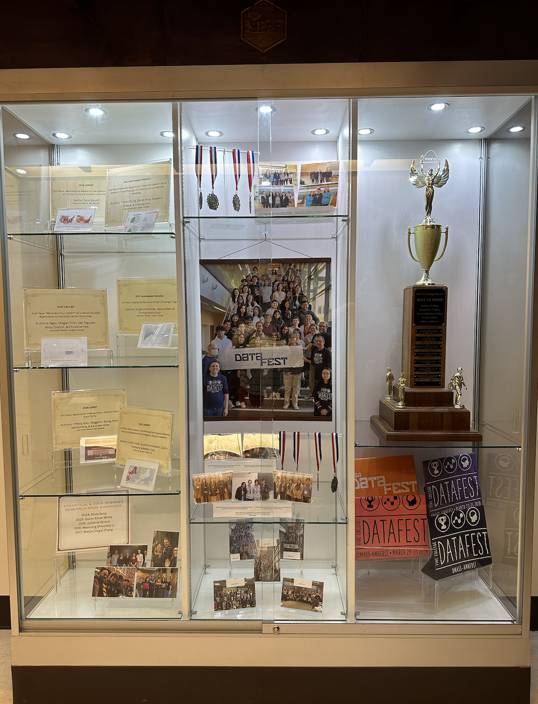

SDS Newsletter
This newsletter is mostly a distillation of our Twitter @SmithCollegeSDS feed. Please follow us to see more news, updates, and pictures!
There is also a Facebook group, a Google group, a LinkedIn group, and a Slack. Please help us reach out to other alumnae by having them contact me!
Program Updates
- There was no DataFest in 2024, but we got a beautiful new trophy case:

- Randi Garcia began her term as Chair of SDS while Ben took a yearlong sabbatical in Colombia. See more in their updates below.
Previous Updates
Faculty Updates
- Shiya Cao and Kaitlyn Cook were reappointed!
- We hired Nikko Stevens, Gillian Beltz-Mohrmann, and Jericho Lawson who begin their positions on July 1.
Ben Baumer
Hola, buenas días!
I’m glad to be back in Northampton after spending my full-year sabbatical in Medellín, Colombia! It was an amazing experience from which we all learned a great deal. My wife and I took many Spanish classes at Universidad EAFIT, which is a lovely place to study. We advanced to B2 level Spanish in the CEFR framework. I suppose it’s bittersweet to report that our daughters are both: 1) much better Spanish-speakers than we are; and 2) so much better that they are horrified by our attempts to speak Spanish!
While on sabbatical I was able to complete the 3rd edition of Analyzing Baseball Data with R, and I struck up a new collaboration with a statistician that I met at EAFIT. We’re working on an R package and a paper for changepoint detection algorithms.
Shiya Cao
My second year at Smith is in the books. I continued to work with students in my Disability Inclusion Analytics Lab (DIAL). I took two Smithies Christy Yang ’25J and Vicky Xu ’26 to attend the Women in Statistics and Data Science (WSDS) Conference in Bellevue, WA in Fall 2023. I am proud of our accomplishments so far:
Note: Student collaborators are underlined.
Cao, S., Yang, C. ’25J, and Xu, V. ’26. (2023). “Examining Environmental Barriers for Disabled Employees in Different Industries and Work Spaces,” Women in Statistics and Data Science (WSDS) Conference, Bellevue, WA.
Lin, J. Q. ’25J, Liu, K. ’24, Cao, S., Liu, Z. ’25, and Pham, L. ’25. “Examining the Intersection of Disability, Race, Gender, and Age in Shaping the Employment Outcomes of Higher Educated Individuals,” under review at Journal of Disability Policy Studies.
Cao, S., Yang, C. ’25J, and Markert, E. ’25. (2024). “Examining Environmental Barriers for Disabled Employees in Different Industries and Work Spaces,” Smith College Celebrating Collaborations Event, Northampton, MA.
Cao, S., Yang, C. ’25J, Markert, E. ’25, and Xu, V. ’26. “Examining Environmental Barriers for Disabled Employees in Different Industries and Work Spaces,” under review at Statistics and Public Policy.
In addition, I built new collaborations with other scholars this year. I have been working with Heather Rosenfeld from the Spatial Analysis Lab (SAL) at Smith on a research project named Mapping for Access on the Smith College Campus: A Participatory Mapping Approach. I have also been collaborating with Keegan Kang, Assistant Professor of Mathematics at Bucknell University, on a research project named Model Interpretation after Using Random Projections: An Applied Study on Travel Disability Data.
Moreover, I am working on publishing my doctoral dissertation, examining information systems-enabled workplace inclusion for disabled employees. One of my dissertation papers is published at the peer-reviewed journal Work: A Journal of Prevention, Assessment & Rehabilitation. I also gave a Sigma Xi talk at Smith in Fall 2023 and another talk for a Statistics II course at Bucknell University in Spring 2024.
This year, I continued to teach SDS 192: Introduction to Data Science. In Fall 2023, I developed and taught a research seminar course SDS 300: Disability Inclusion and Data Analytics. In Spring 2024, I taught the senior capstone course SDS 410 and participated in the pedagogical partnerships program with my student pedagogical partner My My Tran ’24. I had great experiences teaching these courses.
When I had free time, I enjoyed reading books with my book club, practicing piano, seeing movies at Amherst Cinema, and visiting museums. Also, thank you to my colleague Kaitlyn Cook for recommending me the classic American reality TV show “Survivor”! I began to watch Season 1 last summer and am currently at Season 24 (only skipped Seasons 5, 21, and 23), which is a nice way to decompress:)
Kaitlyn Cook
This past year I was excited to develop and teach a new statistics depth course on statistical methods in biostatistics and epidemiology (aptly named “Methods in Biostatistics and Epidemiology”!). The course blended topics from categorical data analysis and survival analysis with discussions of epidemiological study designs, threats to internal and external study validity, and metrics for quantifying the presence of disease in populations. I also enjoyed teaching MTH 246: Probability for the second time and SDS 291: Multiple Regression for the first time. Finally, I was particularly proud to watch my inaugural thesis student, Heng (Silvia) Song ’24, successfully defend her thesis on “Stochastic Processes and their Application in Bayesian Statistics”, making her the first student to graduate with honors in Mathematical Statistics at Smith! Outside of the classroom, I’ve continued settling into life in the Valley by joining a local run club in Northampton, playing trumpet with the Amherst Community Band, and watching far too much reality TV from my couch.
Randi Garcia
Will Hopper
The 2023-24 academic year had some exciting and fun firsts for me! During the summer, I developed and taught a new course for third-year students in Smith’s Doctoral Program for Social Work, focused on applying hierarchical regression models and structural equation models to data analysis and research problems in social science settings. During the “regular” academic year, I got to teach SDS 270: Programming for Data Science for the first (and second!) time. Since I typically teach courses focused on the statistics side of the SDS coin, I enjoyed the chance to teach a programming-focused class. Developing and teaching new classes is a lot of work, but it’s also the most fun part of teaching; a new class is a bit like a blank canvas, and you get to be creative in finding the best way to fill it with what your students need to know.
This fall, I’m looking forward to taking on advisees for the first time, watching the Pokemon World Championships, and teaching SDS 100: Reproducible Computing with Data for the first time!
Albert Y. Kim
Katherine M. Kinnaird
Rebecca Kurtz-Garcia
Scott LaCombe
The last year has been one of many big and exciting changes! Last August, I got married and we went on our honeymoon to Curacao over winter break. I was on sabbatical in the Spring Semester, and we bought a house in Holyoke. I am looking forward to hitting the ground running this Fall and I’m excited to be back.
My sabbatical was spent wrapping up some existing research projects, and also planning out the next few years of my work with students. My State Politics Lab has done a tremendous amount of working helping me build a comprehensive database of LGBTQ policies in the American States, and I took a team of Smithies to Chicago for the Midwest Political Science Association Conference to present our work in April. We are continuing our work this Fall by using text analysis to track the influence of interest groups in states passing Gender Affirming Care Bans and Conversion Therapy Bans.
This upcoming year, I will be teaching my Research Seminar in Political Networks (SDS/GOV 338) in the Fall, and plan on teaching Research Design and Analysis (SDS 290) and Introduction to American Politics (GOV 200) in the Spring.
Lindsay Poirier
Hello SDS friends! This summer, I’m feeling so grateful that I’m coming off of a year where I had an opportunity to focus on work that I find both socially important and personally fulfilling. A Spring sabbatical provided me time to really submerge into aspects of my research program. This past February I spent a month in Frankfurt, Germany on a Mercator Fellowship at Goethe University. While I was there, I delivered a number of lectures and workshops on “data ethnography” and had a chance to work with faculty, post-docs, and graduate students brainstorming how to devise new methods for studying the cultural aspects of data production, circulation, and use. Then in March, with some tremendous collaborators at UCLA, Northeastern University, and Whitman College, I published a paper in the American Journal of Public Health documenting that almost half of US carceral facilities are proximate to sites of contamination by “forever chemicals” (or PFAS). The paper was covered in The Hill, The Guardian, and supported the development of proposed US legislation for improving environmental health in prisons. Publishing this paper meant a lot to me, both personally and professionally. Sabbatical also granted me some time for more personal pursuits. I’ve been diligently working to improve my French, devising Massachusetts adventures for me and my 2.5-year old niece, and putting some elbow grease into making my new house in South Hadley feel more like a home.
This coming year, I’m looking forward to continuing my research examining the cultural origins of the Open Payments database - anthropologically studying how the professionals responsible for disclosing data about their payments to healthcare providers develop certain accounting and meaning-making strategies in their work. I look forward to continue teaching Data Ethnography in the Fall and Spring, and to offering a new course called Community-Based Data Science in the Spring.
Kementari Whitcher
Ab Mosca ’14
Nikko Stevens
Gillian Beltz-Mohrmann
Alumni Updates
- Add alumni updates HERE
What’s next?
Joint Statistical Meetings
Many of us will be at the 2025 Joint Statistical Meetings during the first week of August.
Don’t miss these events featuring Smithies!
- IOL: Quantum Computing for Statisticians
Elizabeth Stuart ’97 (organizer) - Synthetic Data in Preserving Privacy: Connections Across Federal Statistics and Health Data Elizabeth Stuart ’97 (organizer)
- Advancing Bayesian Thinking in STEM Education
Mine Dogucu ’09 (discussant) - Connecting the Dots in Data Science Education: Learning From Different Teaching Contexts
Mine Dogucu ’09 (organizer) - Artificial Intelligence (AI) and Machine Learning (ML) in Business and Industry
Maria Terres ’09 (panelist) - Data Science Ethics: Bridging Teaching and Practice
- Statistical Analyses and Applications for Studying Intersectionality and Disability Inclusion
Kaitlyn Cook (chair)
Shiya Cao (organizer) - Innovative Adaptive Statistical Models for Time Series Data
Rebecca Kurtz-Garcia (chair) - Bandwidth Selection for Zero Lugsail Estimators
Rebecca Kurtz-Garcia
We hope to see you there!